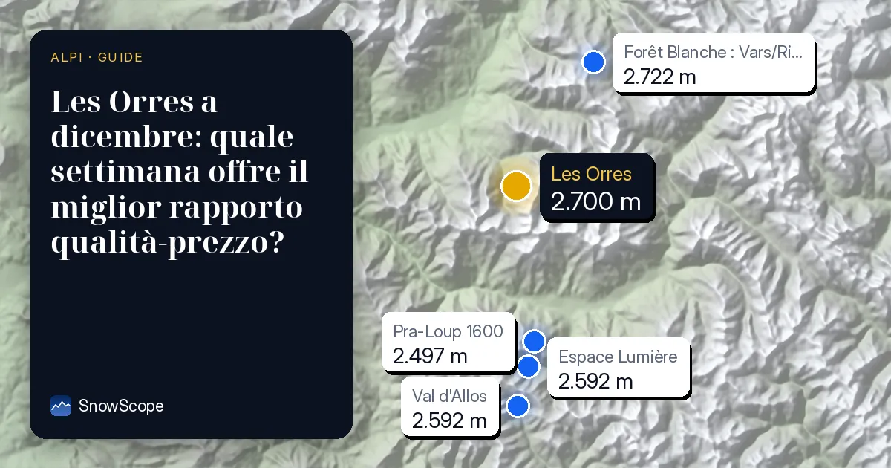

Les Orres a dicembre: quale settimana offre il miglior rapporto qualità-prezzo?
Se vuoi sciare a Les Orres nel dicembre 2026 senza pagare le tariffe di alta stagione prima che la neve sia affidabile alla base, devi far coincidere il calendario dei prezzi con il nostro storico della neve. La settimana giusta unisce un prezzo più basso e buone probabilità di neve.
Le previsioni neve in tempo reale per Les Orres nell'app SnowScopeAltezza neve, allerte powder e mappa 3D, gratis.
Come cambia il prezzo durante dicembre
Il sito ufficiale mostra che i prezzi del pass giornaliero per adulti cambiano con il passare del mese. Dal 5 all'11 dicembre 2026, il prezzo di bassa stagione è di 34 EUR. Passando alla mezza stagione dal 12 al 18 dicembre 2026, il prezzo sale a 38,50 EUR. Una volta raggiunta l'alta stagione dal 19 dicembre 2026, il pass giornaliero per adulti costa 45,50 EUR.
Questi cambiamenti di prezzo graduali ti permettono di scegliere il momento giusto per la tua visita. Paghi meno all'inizio del mese, ma devi verificare se lo spessore della neve corrisponde alle tue aspettative prima di prenotare.

La neve di dicembre a tre altitudini
Il nostro storico della neve di 46 inverni passati mostra chiare differenze tra la base, la metà montagna e la cima degli impianti. Alla base degli impianti a 1.554 m, lo spessore abituale a dicembre è di 23 cm, e lo spessore abituale al 15 dicembre è di 22 cm. Un dicembre scarso porta 3 cm o meno in 1 inverno su 10, mentre un dicembre abbondante porta 53 cm o più. A metà montagna a 2.127 m, lo spessore abituale a dicembre è di 57 cm, con 50 cm abituali al 15 dicembre, e l'intervallo tra scarso e abbondante va da 19 cm a 112 cm. In cima agli impianti a 2.700 m, lo spessore abituale a dicembre raggiunge 97 cm, con 94 cm abituali al 15 dicembre, spaziando da 41 cm in un dicembre scarso a 200 cm in un dicembre abbondante.
La base può rimanere con poca neve all'inizio. La quota di inverni con 30 cm o più alla base è solo del 15 % dall'1 al 7 dicembre, sale al 26 % dall'8 al 14 dicembre, al 41 % dal 15 al 21 dicembre e al 52 % dal 22 al 28 dicembre. A metà montagna, la quota di inverni con 30 cm o più è già del 61 % dall'1 al 7 dicembre, del 78 % dall'8 al 14 dicembre, e raggiunge l'87 % dal 15 al 21 dicembre e l'89 % dal 22 al 28 dicembre. In cima, la quota è dell'87 % dall'1 al 7 dicembre e sale al 96 % dal 15 al 28 dicembre.
Al momento, i dati sulla neve per il 13 novembre 2026 mostrano 0 cm alla base degli impianti con 2 cm di neve fresca previsti nei prossimi 7 giorni. A metà montagna ci sono 1 cm con 29 cm di neve fresca previsti, e in cima ci sono 10 cm con 40 cm di neve fresca previsti. Le previsioni di neve fresca a due settimane dal 13 novembre 2026 al 26 novembre 2026 per la metà montagna e oltre indicano una media di 67 cm in un intervallo da 55 a 80 cm.
La settimana in cui prezzo e neve coincidono
Mettendo i due calendari uno accanto all'altro, la settimana migliore è quella di media stagione, dal 12 al 18 dicembre 2026. Lo skipass adulti di 1 giorno costa allora 38,50 EUR, contro 45,50 EUR dal 19 dicembre, e le probabilità di neve sono molto migliori rispetto ai primi giorni.
A metà montagna c'erano 30 cm o più nel 78 % degli inverni passati dall'8 al 14 dicembre e nell'87 % dal 15 al 21 dicembre; in vetta era il 96 % nella seconda metà del mese. Così scii le piste alte su una base solida e paghi ancora la tariffa di media stagione, prima dei prezzi di Natale.
Confronto con Vars-Risoul
È utile confrontare Les Orres con la vicina Vars-Risoul per vedere come si posizionano i numeri. Vars-Risoul offre un'area sciistica mappata più grande con 131 km di piste e 38 impianti, rispetto all'area sciistica di Les Orres con 54 km di piste e 21 impianti. Il dislivello è simile, con Vars-Risoul che va da 1.632 m a 2.722 m, e Les Orres da 1.554 m a 2.700 m.
In termini di neve, Vars-Risoul mostra uno spessore abituale a dicembre di 33 cm alla base (1.632 m), 51 cm a metà montagna (2.177 m) e 77 cm in cima (2.722 m). Il suo spessore abituale al 15 dicembre è di 32 cm alla base, 48 cm a metà montagna e 76 cm in cima. Per i prezzi, Vars-Risoul elenca un pass giornaliero per adulti Forêt Blanche per l'inverno 2026-27 a 58 EUR, e un pass per adulti di 6 giorni a 298 EUR. Les Orres ti offre prezzi giornalieri più flessibili a partire da 34 EUR in bassa stagione, rendendola una scelta più economica se punti alle settimane giuste.
Cosa è cambiato dagli anni '1980
Guardando indietro ai nostri 46 inverni passati, le medie di dicembre mostrano uno spostamento positivo nello spessore della neve alle altitudini più elevate. Se confrontiamo i primi 15 inverni (1980-81 al 1994-95) con gli ultimi 15 inverni (2011-12 al 2025-26), i numeri raccontano una storia interessante. A metà montagna, la media di dicembre era di 44 cm nei primi 15 inverni, ed è salita a 58 cm negli ultimi 15 inverni. In cima agli impianti, la media di dicembre era di 76 cm nei primi 15 inverni, ed è aumentata a 101 cm negli ultimi 15 inverni.
Alla base degli impianti, la media di dicembre è passata da 21 cm nei primi 15 inverni a 24 cm negli ultimi 15 inverni. Il dicembre più scarso registrato a metà montagna è stato di 2 cm nella stagione 2015-16, mentre il dicembre più abbondante a metà montagna ha raggiunto 128 cm nella stagione 1996-97. L'inverno scorso, la stagione 2025-26 ha portato una media di dicembre di 19 cm alla base, 42 cm a metà montagna e 72 cm in cima.
Consigli per sciatori
- Prenota il tuo skipass sul sito ufficiale per la settimana dal 12 al 18 dicembre 2026 per assicurarti la tariffa di mezza stagione di 38,50 EUR prima che inizino i prezzi di alta stagione il 19 dicembre.
- Concentra la tua sciata a metà montagna (2.127 m) e in cima (2.700 m) a dicembre, dove la quota di inverni con 30 cm o più è dall'87 % al 96 % a metà mese.
- Controlla il bollettino locale delle valanghe prima di andare fuori pista, specialmente quando i totali di neve fresca previsti aggiungono spessore alle quote più elevate.
- Aspettati una copertura sottile alla base (1.554 m) all'inizio del mese, dove lo spessore abituale di dicembre è di soli 23 cm e la quota di inverni con 30 cm o più è solo del 15 % dall'1 al 7 dicembre.
Altre mappe (siti esterni)
Riferimenti e crediti
- Les Orres, official ski pass prices 2026-27 www.lesorres.com/forfaits-de-ski
- Risoul, official ski pass page, Forêt Blanche 2026-27 risoul.labellemontagne.com/fr/hiver/forfaits/risoul-foret-blanche/
- Risoul, official 6-day Forêt Blanche pass page 2026-27 risoul.labellemontagne.com/fr/hiver/forfaits/6-jours-foret-blanche/
- SnowScope, December snow at three heights and today's snow map snowscope.app/
Su questi numeri
Numeri della neve: storico neve SnowScope, 46 inverni passati (1980-81 - 2025-26) a tre quote di ogni località (un modello del passato corretto per la quota: una stima per un'area, non misure della località); dati di dicembre calcolati dalle altezze giornaliere di quegli inverni. Neve attuale e tendenza a due settimane: previsioni SnowScope (tendenza da ECMWF e GFS, un intervallo, non una promessa). Impianti e piste: mappatura OpenSkiMap. Prezzi: le pagine ufficiali qui sotto, lette il 2026-11-13; i prezzi possono cambiare, verificare prima di prenotare.
Bollettini valanghe ufficiali: Météo-France – Bulletin d'estimation du risque d'avalanche
Cita questo articolo
Per ricerca, didattica o stampa: numeri e grafici sono liberamente riutilizzabili con licenza CC BY 4.0 citando così.
SnowScope (2026), Les Orres a dicembre: quale settimana offre il miglior rapporto qualità-prezzo?, https://snowscope.app/blog/it/2026/11/les-orres-december-ski-week-by-week-prices-2026.html, consultato il 2026-11-14
SnowScope (Atlas Labs). (2026, November 14). Les Orres a dicembre: quale settimana offre il miglior rapporto qualità-prezzo?. SnowScope snow reports. https://snowscope.app/blog/it/2026/11/les-orres-december-ski-week-by-week-prices-2026.html
BibTeX
@misc{snowscope2026lesorresdecemberskiweekb,
author = {{SnowScope (Atlas Labs)}},
title = {Les Orres a dicembre: quale settimana offre il miglior rapporto qualità-prezzo?},
year = {2026},
month = nov,
howpublished = {\url{https://snowscope.app/blog/it/2026/11/les-orres-december-ski-week-by-week-prices-2026.html}},
note = {Published 2026-11-14 15:51 UTC; accessed 2026-11-14}
}· CC BY 4.0 · Metodi, dati e strumenti →
Les Orres: neve e temperatura per quota, quest'inverno vs lo scorso (strumenti) →
Segui Les Orres
Gratis: un messaggio quando arriva la neve e il meteo ogni mattina.